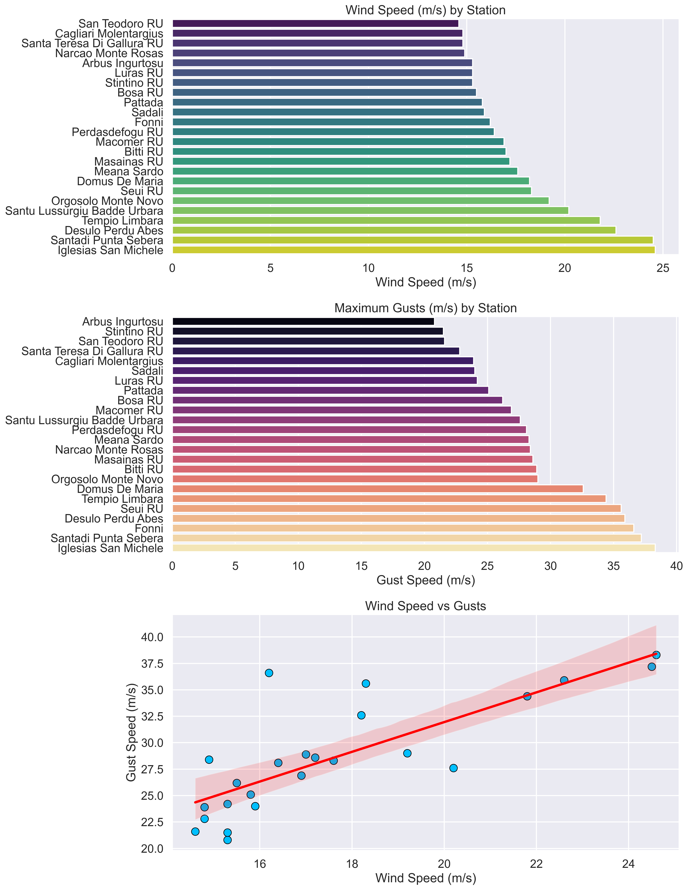
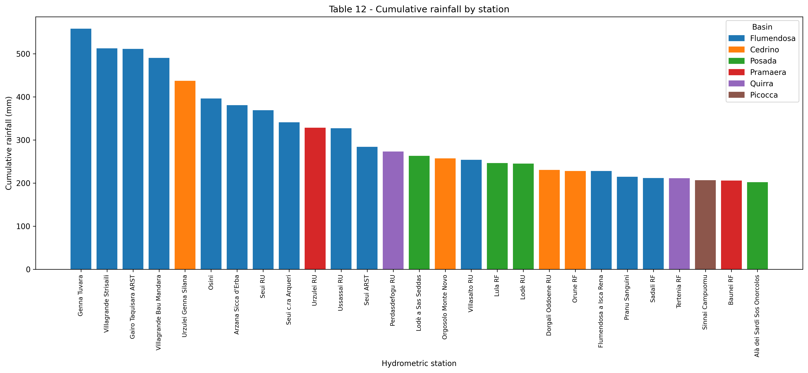
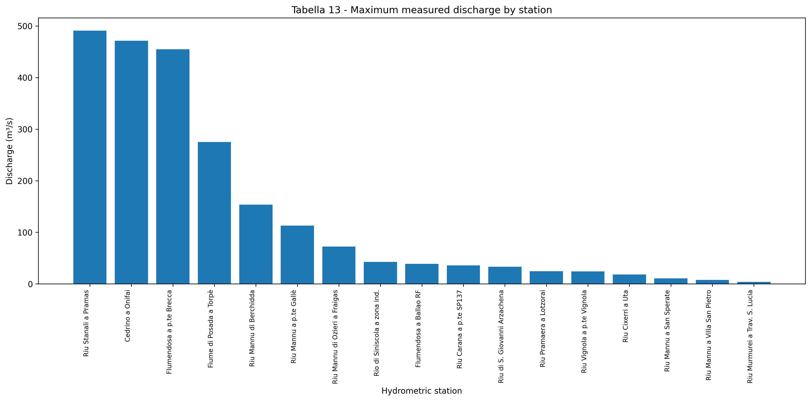

Introduction
Cyclone Harry affected Sardinia between 19 and 22 January 2026, producing one of the most severe windstorms recorded over the island in recent years. The event was characterized by exceptionally strong winds, heavy rainfall, rough seas, and intense coastal wave action associated with a deep Mediterranean low-pressure system. Sardinia’s complex topography significantly modulated the wind field. Mountainous regions such as Gennargentu (Fonni, Desulo, Seui) acted as both barriers and accelerators of airflow. Channeling effects through valleys increased local wind speeds, while ridge-top exposure enhanced gust intensity through flow separation and turbulent eddies. The cyclone caused widespread disruptions across Sardinia, including damage to infrastructure, coastal erosion, transport interruptions, localized flooding, landslides, and impacts on vegetation and power networks.
With the broader context of the event established, the discussion now moves to a detailed analysis of the atmospheric conditions associated with Cyclone Harry. Particular attention is given to the wind field and the spatial distribution of wind speeds and gusts, together with the other environmental factors that contributed to the intensity and variability of the impacts recorded across Sardinia.
Wind Field Map
The Wind Field Map illustrates the spatial distribution of the mean wind field associated with Cyclone Harry over Sardinia,
highlighting the marked variability in wind intensity across the island during the event.
The most severe conditions were observed in the southwestern sector of the island,
where the strongest winds were recorded.
Wind data used in this study, including mean wind speed and maximum wind gust values recorded at selected monitoring stations between 18 and 21 January, were obtained from the Regional Agency for Environmental Protection of Sardinia (ARPAS)
ARPAS Wind Data (PDF).

Cyclone Harry wind-speed distribution across Sardinia.
Color shading represents mean wind speed (m s⁻¹), based on observations from selected ARPAS meteorological stations between 18 and 21 January 2026. Red labels identify key high-impact stations affected by Cyclone Harry.
In particular, Iglesias San Michele and Santadi Punta Sebera experienced
the highest wind intensities,
likely due to their proximity to the cyclone's strongest pressure-gradient zone,
where geostrophic forcing was maximized.
In contrast, stations located in northern and northeastern Sardinia
recorded lower mean wind speeds, suggesting a marked spatial asymmetry
in the cyclone structure, influenced by both the storm track and the
island's complex topography.
Wind Speed and Gusts
To gain a more comprehensive understanding of the wind conditions associated with Cyclone Harry, it is useful to examine both the mean wind speed and maximum wind gust distributions across Sardinia, as well as their spatial relationship. This combined analysis reveals that the cyclone affected the island in a highly heterogeneous and dynamically complex manner, characterized by pronounced spatial gradients in wind intensity and substantial local variability. A notable feature of the event is the marked enhancement of wind gusts in the inland mountainous regions, highlighting the important role of orographic forcing in modulating the wind field. As the airflow interacted with Sardinia’s complex terrain, channeling effects, flow acceleration over elevated areas, and enhanced turbulent mixing within the atmospheric boundary layer likely contributed to locally amplified gust magnitudes beyond those expected from the large-scale synoptic forcing alone. Together, these patterns provide valuable insight into both the regional structure of Cyclone Harry and the influence of local topographic controls on the island’s wind response during the storm.
Building on these results, a set of wind-based diagnostic figures is presented below,
summarizing the spatial variability and statistical structure of wind conditions across
Sardinia using observations from selected ARPAS stations between 18 and 21 January 2026.
These figures illustrate the distribution of mean wind speed and maximum wind gusts,
as well as their interrelationship, providing insight into intensity gradients,
local amplification effects, and the overall wind response during the passage of the cyclone.

Wind characteristics during Cyclone Harry over Sardinia, based on mean wind speed and wind
gust data from selected ARPAS stations (18–21 January 2026).
The upper panel shows the spatial distribution of mean wind speed (m s⁻¹), with a pronounced gradient and strongest sustained winds in the southwestern sector, particularly at Iglesias San Michele and Santadi Punta Sebera. The central panel illustrates maximum wind gusts (m s⁻¹), with peak values exceeding 35–38 m s⁻¹ in several stations, especially in southern and inland mountainous areas. The lower panel presents the relationship between mean wind speed and gusts, showing a clear positive correlation, although local-scale effects such as topography and boundary layer turbulence contribute to the observed scatter.
The first graph summarizes the mean wind speed recorded at each station, providing a quantitative assessment of the cyclone's intensity across the monitoring network. While the general spatial pattern is consistent with that shown in the wind field map, the station data reveal the magnitude of the differences between locations and identify the sites that experienced the most persistent wind conditions. These results serve as a useful baseline for comparison with the maximum wind gusts, which reflect the more localized and transient effects of the storm.
The second graph, which displays the maximum gusts recorded, provides a more extreme view of the event.
Gust values are significantly higher than the mean wind speeds, reaching peaks close to 40 m/s.
Again, the southwestern stations stand out, but an interesting feature is
the presence of very strong gusts in inland mountainous locations such as Fonni and Desulo.
This points to the important role of Sardinia’s complex terrain,
which likely enhanced wind speeds through local acceleration and channeling effects.
Finally, the scatter plot helps to connect mean wind conditions with gust intensity. A general relationship is visible: stronger mean winds tend to correspond to stronger gusts. However, the spread of the points also shows that this relationship is not perfect. Local factors such as topography, surface roughness, and turbulent atmospheric processes clearly influenced the intensity of gusts beyond the large-scale wind field.
Overall, the figures together show a coherent picture of a strong windstorm event, characterized by marked spatial variability and significant local enhancements driven by terrain interaction.
🌊 Cyclone Harry Flood Dashboard
Following the analysis of wind conditions associated with Cyclone Harry, attention is now shifted to its hydrological impacts across Sardinia. In particular, the event is examined in terms of rainfall accumulation and peak river discharge, which represent the primary drivers of the observed flooding response. The Cyclone Harry Flood Dashboard integrates precipitation measurements and peak flow data to provide a comprehensive overview of the hydrological severity of the event. This section aims to characterize the spatial and temporal distribution of rainfall, as well as the resulting hydrological response in selected catchments, highlighting areas where extreme precipitation translated into critical peak flow conditions and potential flooding impacts.
📈 Hydrological Analysis
Rainfall

Spatial distribution of cumulative rainfall observed during Cyclone Harry. The highest accumulations
occurred in eastern Sardinia, highlighting strong spatial variability and localized precipitation maxima.
The first graph summarizes the mean wind speed recorded at each station, providing a quantitative assessment of the cyclone's intensity across the monitoring network. While the general spatial pattern is consistent with that shown in the wind field map, the station data reveal the magnitude of the differences between locations and identify the sites that experienced the most persistent wind conditions. These results serve as a useful baseline for comparison with the maximum wind gusts, which reflect the more localized and transient effects of the storm.
Peak Flow

Peak discharges revealing significant differences in hydrological response
among Sardinian catchments.
The second graph, which displays the maximum gusts recorded, provides a more extreme view of the event. Gust values are significantly higher than the mean wind speeds, reaching peaks close to 40 m/s. Again, the southwestern stations stand out, but an interesting feature is the presence of very strong gusts in inland mountainous locations such as Fonni and Desulo. This points to the important role of Sardinia’s complex terrain, which likely enhanced wind speeds through local acceleration and channeling effects.
Finally, the scatter plot helps to connect mean wind conditions with gust intensity. A general relationship is visible: stronger mean winds tend to correspond to stronger gusts. However, the spread of the points also shows that this relationship is not perfect. Local factors such as topography, surface roughness, and turbulent atmospheric processes clearly influenced the intensity of gusts beyond the large-scale wind field. Overall, the figures together show a coherent picture of a strong windstorm event, characterized by marked spatial variability and significant local enhancements driven by terrain interaction.
Building upon the detailed analysis of wind conditions associated with Cyclone Harry, it is important to place these findings within the broader context of the event’s overall hydro-meteorological impact. While the previous sections have highlighted the pronounced spatial variability of the wind field and the strong contrast between exposed and sheltered areas of Sardinia, the cyclone also produced significant precipitation and severe marine conditions, which played a crucial role in amplifying its overall effects. In fact, the interaction between intense atmospheric forcing, persistent moisture transport, and the island’s complex topography resulted in a multi-hazard scenario, where wind, rainfall, and coastal processes acted simultaneously to generate widespread impacts across the region. In this framework, the following section examines precipitation totals and wave conditions associated with Cyclone Harry, providing a more complete characterization of the event and its environmental consequences.
📹 Flooding at Poetto
In line with the wind-related impacts described above, ARPAS observations reveal exceptionally high rainfall accumulations during Cyclone Harry, particularly in the Ogliastra region, where values exceeded 400 mm at Genna Silana (Urzulei) over the 18–21 January period, while other stations such as Jerzu recorded totals above 200 mm. These extreme precipitation amounts contributed to widespread hydrological impacts across eastern and central-eastern Sardinia. In addition, the event was characterized by severe coastal conditions, with significant wave heights reaching approximately 5–6 m along exposed sectors of the southern and eastern coasts, including the Poetto area (Cagliari), where intense wave action resulted in coastal inundation and transport disruptions.
The video presented below documents the coastal conditions at Poetto beach (Cagliari) during Cyclone Harry, providing visual evidence of the strong wave impact and associated coastal inundation.
CONCLUSION
Cyclone Harry represented a significant meteorological event affecting Sardinia
between 19 and 22 January 2026, characterized by the combined occurrence of
intense winds, extreme precipitation, and severe marine conditions.
The analysis of wind fields revealed a pronounced spatial heterogeneity,
with the strongest mean winds concentrated in the southwestern sector of the island,
while wind gusts showed marked local amplification in the mountainous interior,
highlighting the important role of topographic effects in modulating the atmospheric flow.
The integration of precipitation data and coastal observations further
emphasized the multi-hazard nature of the event.
Exceptionally high rainfall accumulations in eastern Sardinia,
particularly in the Ogliastra region, contributed to widespread hydrological impacts,
while severe wave conditions along the southern and eastern coasts, including the Poetto area in Cagliari,
resulted in coastal inundation and disruptions to transport and infrastructure.
Overall, Cyclone Harry illustrates how Mediterranean cyclonic systems can produce
strongly non-uniform impacts over relatively small spatial scales,
driven by the interaction between synoptic-scale forcing and complex local topography.
These findings highlight the importance of integrated
multi-variable analyses for a comprehensive understanding of
extreme weather events and their associated environmental and societal impacts.